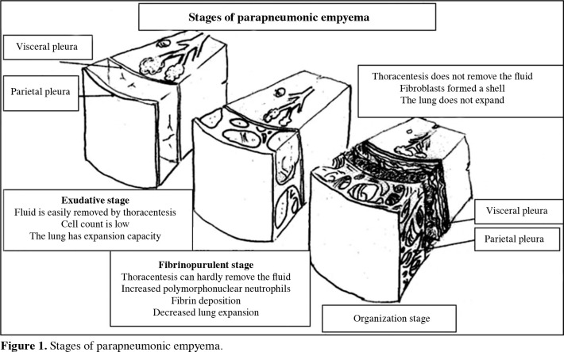
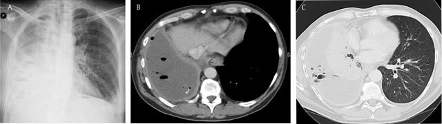
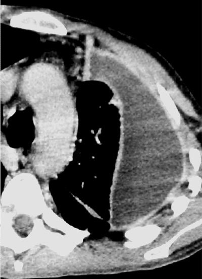

定義與定位
| 項目 | 重點 |
|---|---|
| 本質 | 胸膜腔內化膿性積液 |
| 最常見成因 | Parapneumonic（細菌性肺炎併發），約佔多數 |
| 其他成因 | 胸腔手術後、外傷、食道破裂、膈下膿瘍向上蔓延、肺膿瘍破入胸膜腔 |
| 分類位置 | Pleural effusion↗ 的一種——exudate（滲出液） |
病因與機制
flowchart TD P["細菌性肺炎"] --> S1["① Exudative 滲出期<br/>清澈・無菌"] S1 -.->|"抗生素即可"| R1["痊癒"] S1 -->|"細菌侵入"| S2["② Fibrinopurulent<br/>嗜中性球湧入"] S2 --> M["糖被吃光・乳酸堆積<br/>細胞壞死・fibrin 沉積"] M --> L["pH↓ glucose↓ LDH↑<br/>loculation 分隔小房"] S2 --> S3["③ Organizing 機化期<br/>2–4 週・纖維硬殼"] S3 --> O["肺無法擴張<br/>需手術剝除"] classDef stage fill:#263238,stroke:#000,color:#fff,font-weight:bold classDef lab fill:#0d47a1,stroke:#062a5e,color:#fff,font-weight:bold classDef bad fill:#8e0000,stroke:#5f0000,color:#fff,font-weight:bold classDef good fill:#1b5e20,stroke:#0b3d0b,color:#fff class S1,S2,S3 stage class L lab class O bad class R1 good

膿胸由 exudative → fibrinopurulent → organization：游離液體逐漸形成 fibrin 分隔與 loculation，最後纖維殼限制肺擴張，單純 thoracentesis 已難以清除。Source: Kuru & Altinok, “Empyema in children” Figure 1（CC BY-NC 4.0）。臨床表現
- 典型：發燒、咳嗽有痰、pleuritic 胸痛（深呼吸加劇）、喘
- 提示性：近期呼吸道感染後「燒退一半又燒起來」、體重減輕、倦怠
- 少見但重要：右下胸／膈肌附近病灶可投射成右上腹痛，病人主訴會是肚子痛而不是胸痛
→ 相關主訴流程：RUQ pain、Chest pain↗、Dyspnea
診斷
| 診斷條件 | 內容 |
|---|---|
| 影像 | Chest X-ray↗：肋膈角變鈍、meniscus sign；大量時縱膈腔被推向健側。側躺（decubitus）片可看流不流動 → 判斷有無 loculation |
| 進階影像 | 胸部超音波（看 loculation 最好、可導引穿刺）；CT（看 pleural thickening、split pleura sign） |
| 確診 | Pleural fluid analysis（胸腔穿刺）——抽到膿，或培養／Gram stain 陽性 |
要開的檢查：CXR、胸水分析、CBC/DC、CRP、血液培養、痰培養＋抗酸染色
胸水判讀：需要引流的門檻
| 指標 | 切點 | 意義 |
|---|---|---|
| 肉眼 | 膿 (frank pus) | 直接診斷膿胸 |
| Gram stain / culture | 陽性 | Complicated |
| pH | < 7.20 | 最敏感的早期指標，一般視為插胸管的適應症 |
| Glucose | < 40 mg/dL（部分文獻用 < 60） | Complicated |
| LDH | > 1000 IU/L | Complicated |

同一右側膿胸的 CXR 與增強 CT：平片只有右胸大片陰影；CT 才清楚顯示胸膜腔內液體、氣泡、壓迫性肺塌陷與胸膜增強。Source: Ilsen et al., “Comparative Interpretation of CT and Standard Radiography of the Pleura” Figure 8（CC BY 4.0）。
split pleura sign 特寫：增厚且增強的壁層與臟層胸膜被液體分開。膿胸通常呈胸膜基底、透鏡狀並與胸壁成鈍角；肺膿瘍較圓、位於肺實質且多成銳角。Source: 同文 Figure 9（CC BY 4.0）。鑑別診斷
| 要排除的 | 支持它的線索 | 怎麼排除 |
|---|---|---|
| Pleural effusion↗ transudate（心衰竭、肝硬化、腎病症候群） | 兩側對稱、無發燒、有 JVE／水腫 | Light's criteria → transudate |
| Tuberculosis↗ 結核性胸膜炎 | 久咳、盜汗、體重減輕、接觸史 | 胸水 ADA > 40 U/L、淋巴球為主、抗酸染色／培養 |
| 惡性胸水 | 體重減輕、血性胸水、量大且反覆 | 細胞學、胸膜切片 |
| Pneumonia 單純肺炎無積液 | 有浸潤但無肋膈角變鈍 | CXR ± 超音波 |
| Lung abscess↗ 肺膿瘍 | 空洞內有 air-fluid level | CT 可分辨（膿瘍是圓的、與胸壁成銳角） |
治療
| 情境 | 處置 |
|---|---|
| 一律 | IV 抗生素 ＋ 引流，兩者缺一不可 |
| 抗生素 | 經驗性涵蓋 Streptococcus、Staphylococcus、厭氧菌（社區型常見吸入性）；院內型需考慮 MRSA 與 Gram(−)。依當地抗藥性與院內指引調整 |
| 引流 | Chest tube drainage（chest tube 或 pigtail catheter），超音波導引可提高成功率 |
| 引流不順／多房分隔 | 胸腔內纖維溶解劑（tPA ＋ DNase） |
| 上述失敗／已機化 | VATS 或開胸 decortication（剝除纖維硬殼） |
| 支持 | 氧氣、止痛（讓病人敢深呼吸）、營養、肺部復健 |
併發症與預後
- 要盯的併發症：敗血症、呼吸衰竭（積液壓迫可使血氧持續下降，要盯 SpO₂）、支氣管肋膜瘻管（bronchopleural fistula）、纖維胸（fibrothorax）造成永久性肺功能受損、膿液向外破出（empyema necessitatis）
- 預後因子：從發病到引流的時間（愈早愈好）、是否已 loculation、宿主免疫狀態、致病菌種
禁忌與陷阱
相關連結
- RUQ pain — 常見的主訴入口之一
- Pleural fluid analysis — Light's criteria 與引流門檻
- Chest tube drainage — 處置細節與併發症
- Pneumonia — 最常見的上游病因
- Tuberculosis↗ — 主要鑑別